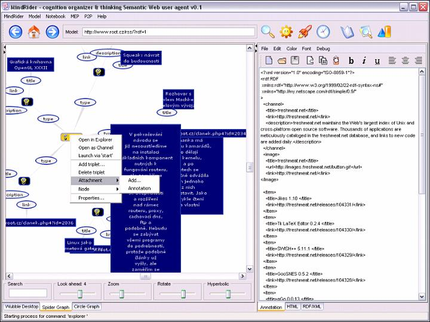
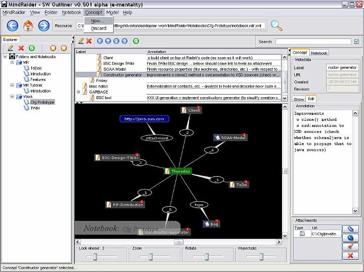
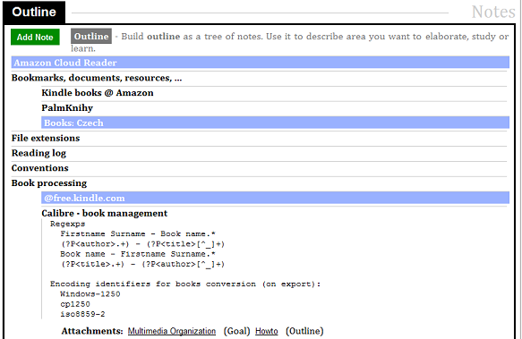
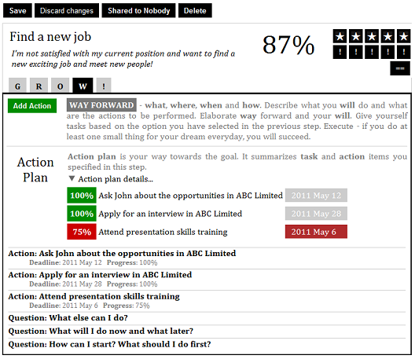

MindForger
Docs
MindForger
Docs
Project History
The story of the human mind inspired outliner is also an important chapter in the story of my life.
It's the year 1996. It's early in the morning. I sit on a sofa and wait for a college exercise to begin. Thinking about an interesting topic and a piece of software to implement. How can I use what I learned in recent two years at the college? It should be exciting, it should be something from my domain, it must be something I will be using every day... as a student.
A strange pale guy is limping through the corridor and sits next to me. I have never seen him before and cannot remind him from any past lecture. He stares at me through thick glasses and we start to talk about this and that, about what exciting we have seen recently, getting to the topics of our interest and finding that we actually have a lot in common... and interest in the human mind in particular. We talk about old school AI, and about an obvious gap in contemporary Office suites. We skip the lecture and keep talking about the exciting ideas in a guild clubhouse. We say goodbye excited, inspired and passionate. I don't remember his name, but I remember that day until today very well. This was the last time we met.
It's the year 1998. I'm waiting in from of a session room for an old professor whose lectures I will be attending in the following 4 semesters to come. He excels in mathematical analysis, received the highest academic awards, then he got fascinated by the human mind, gave up mathematics, turned into a rebel and started to study his own mind and also the mind of his 4 years old grandson. Discussing various aspects of the human mind, cell model, neural networks four hours every week for two years. He is skeptical, he often enters the room smiling aloud while having Nature magazine in his hand - making fun of an experiment of US scientists who sliced the brain of a poor prisoner who was sentenced to death and trying to understand how the mind works. He compares it to the experiments with his grandson, self-observation, emotions analysis and primitive reflex backgrounds.
It's the year 2003. I'm joining my colleagues at work and we make a big Amazon order to make it cheaper. I order Pinker's How the Mind Work and Gärdenfors's Conceptual Spaces: The Geometry of Thought. Great books, but this is not what I'm looking for...
It's the year 2004. I'm excited by the semantics web. Reading all available literature, articles (including the one in Scientific American and web pages written by Tim Berners-Lee, going deep into RDF, ontologies and DARPA-funded technologies and specs. Reminding my college encounter thinking about putting the technology and ideas together.
I'm googling, putting together various libraries, learning about force-directed graphs, coding overnight and in early mornings while my girlfriend sleeps next to me. Happy days.
It's the year 2005. I just released MindRaider with buzzwordish pitch "semantic web outliner" on SourceForge. My first open-source project. I have a good feeling of being able to do something myself without any help. I don't expect any response - the project is fresh meat, unstable, with no documentation and UI that nobody (except the author ~ me) can understand. I'm afraid that someone will be using it... but at the same time I'm curious. I got a splash of emails - getting 10s of emails in 2 weeks after the release. People from around the world - including postgraduates and researchers - are writing about MindRaider, asking questions, want to understand it, integrate and cooperate.
It's the year 2006 and I just gave a speech to a small audience at a university about the project. More feedback, more interest in the project, more ideas on how to extend it. Two months later my older son is born and my life priorities are changed.
The project lives its own life. I use it on an everyday basis as a normal end user. It's reviewed on various servers, there is an article on Lifehacker and the project gets 10k downloads in one day, I'm getting emails from students to whom MindRaider 'saved their ...' (you know what) when they needed to prepare for a tough exam, from software and marketing companies that use it to deliver projects. I'm getting emails from interesting verticals like automotive and even NASA employees.
It's the year 2010. I just bought Kindle, 3rd generation. I spent my first money on books on memo athletics. I also download a few cognitive psychology articles by coincidence. This is it! This is what I discussed years ago with the pale student, this is what human mind addicted professor has been researching. I enjoy reading formal definitions of concepts I discovered myself and planned to incorporate into my projects.
It's 2011 and MindRaider on Google App Engine PaaS (which was just born) is evaluated by the first invited users - it's Coaching Notebook SaaS and it goes much further. It's auto-coaching tool atop abstractions, I verified in the past, which is trying to help in making life more balanced and happier. But life cannot be planned...
...it's the year 2013. I'm lying and shaking on the bed. Anxiety, depression and nightmares. Scared and unable to sleep for a few weeks. Having personal problems and taking my work way too much seriously.
It's the year 2014 and I believe that this is a new beginning. I just opened a text editor and started to write a book on the human mind, memory, intelligence, knowledge, memo athletics, remembering, forgetting, subliminal learning, organized super-organisms and information waves ... which is shaping the vision of thinking notebook.
It's 2017 and I just decided to leave my full-time job - inspired by talk which Andy Weir gave at LLNL - to enjoy my very own and self-sponsored sabbatical whose ultimate goal is to research and prototype my new project - MindForger.
Donald Knuth implemented TeX because he was not satisfied with existing typesetting systems and he wanted to write beautiful research articles and books. Linux Torvalds implemented Git because he was not satisfied with existing version-control systems and he wanted to efficiently maintain Linux kernel source code. I admire both of these men. Both of them stopped the work and implemented a tool which they were desperately missing. Then they returned back to do what they know best. My motivation is exactly the same.
Forger part of the MindForger project name is inspired by forger character from Inception (2018) movie by Christopher Nolan (Tom Hardy as dream property forger). This is also why the first release screenshot and the web page will be based on Eddie character from Venom movie (Tom Hardy w/ symbiont).

It's my 42nd
birthday and I just announced the first public release - MindForger 0.42.0 - to
confirm answer to
the Ultimate Question of life, the Universe, and Everything.
Sabbatical mission accomplished, but I believe that this is just
a beginning - Adventure is out there!
RDF Spiders

RDF Spiders was a 90s Java-based application which visualized RDF models. RDF was a core format specification of the Semantic Web.
RDF Spiders can be seen as a mind mapping application with native RDF runtime interoperable with other Semantic Web applications. It required good knowledge of RDF which obviously limited number of potential users to almost zero. This is why I decided to implement less geeky and more user friendly MindRaider.
MindRaider

MindRaider is a 90s Java-based Semantic Web desktop application which is an outliner with RDF runtime. MindRaider was decently successful project with 100.000+ downloads. However it became morally obsolete and I didn't want to invest my time to deliver new features on top of dying UI and runtime technology. Therefore I decided to start a new project.
Coaching Notebook

CoachingNotebook is a successor of MindRaider. At the beginning it was a combination of auto-coaching tool and outliner. Implemented on Google App Engine PaaS (GAE) it served as a way to learn trendy technologies. After a few years I determined that coaching aspect of MindForger has questionable future, application is too big, complex and basically all coaching features can be realized using a mature outliner.

Therefore I decided to split CoachingNotebook project to two focused applications: auto-coaching and outliner. I opensourced CoachingNotebook (w/o outliner) on GitHub under Apache license.
Then I decided to return back to the roots.
MindForger

MindForger is desktop application built with lessons learned/fails/experience from all my past projects. It aims to finally go beyond outliner and become definitive human mind inspired personal knowledge management tool running on desktop. Key features include human mind like capabilities with ML/NLP behind the scene and decent performance.